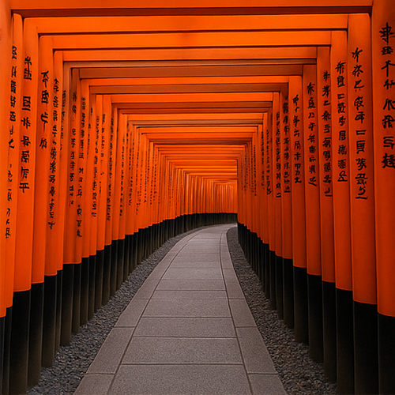

Fushimi Inari Taisha – Il Magico Sentiero delle 10.000 Torii di Kyoto
Fushimi Inari Taisha (伏見稲荷大社) è uno dei luoghi più iconici e fotogenici del Giappone, famoso in tutto il mondo per le sue migliaia di portali torii rossi vermiglio che si snodano sul sacro Monte Inari, a sud di Kyoto. È un luogo magico dove spiritualità shintoista, natura e tradizione antica si fondono in perfetta armonia visiva.
Un Santuario Dedicato a Inari – Divinità del Riso e della Prosperità
Fondato già nel 711 d.C., Fushimi Inari è il santuario principale tra oltre 30.000 santuari Inari in tutto il Giappone. Inari è la divinità shintoista del riso, dell’agricoltura, del commercio e dell’industria. Nel corso dei secoli, mercanti e fedeli hanno donato portali torii come segno di gratitudine per la prosperità ricevuta, creando lo spettacolare sentiero chiamato Senbon Torii ("Mille Torii").
Incontra gli Spiriti Volpe (Kitsune)
A guardia dei santuari e degli ingressi troverai le statue delle volpi (kitsune) in pietra — i messaggeri di Inari. Spesso rappresentate con una chiave o una gemma in bocca, queste figure mistiche sono considerate portatrici di saggezza sovrannaturale e protettrici contro il male. I loro occhi vigili accompagnano i visitatori lungo il cammino, rafforzando l’atmosfera spirituale.
La Leggendaria Escursione tra le Torii
L’escursione completa fino alla vetta del Monte Inari richiede circa 2–3 ore andata e ritorno. Lungo il percorso incontrerai piccoli santuari secondari, lanterne di pietra ricoperte di muschio e punti panoramici sulla città di Kyoto. Se hai poco tempo, puoi goderti la sezione inferiore — la più fotografata — in soli 30 minuti.
I momenti migliori per visitare sono la mattina presto o nel tardo pomeriggio, quando ci sono meno turisti e la luce dorata attraversa magicamente i portali.
Il Ruolo Culturale del Fushimi Inari
Fushimi Inari ha ispirato numerose opere d’arte, film e letteratura giapponesi. I suoi torii rossi rappresentano il passaggio tra il mondo umano e quello spirituale. Il santuario è apparso anche nel film Memorie di una Geisha e continua a essere una tappa imperdibile in ogni itinerario di viaggio in Giappone.
Come Arrivare al Santuario Fushimi Inari
- 🌸 Da Kyoto Station: 5 minuti con la JR Nara Line fino alla stazione Inari
- 🌸 1 minuto a piedi dalla stazione all’ingresso principale con il torii
- 🌸 Ingresso: Gratuito, aperto 24 ore su 24 tutto l’anno
- 🌸 Migliori punti fotografici: Senbon Torii, incrocio Yotsutsuji, statue delle volpi
Perché Visitare Fushimi Inari è Essenziale a Kyoto
Che tu sia un fotografo, un viaggiatore spirituale, un escursionista o semplicemente curioso, Fushimi Inari Taisha è una destinazione imperdibile che unisce bellezza, mistero e significato. Offre uno sguardo sulla fede antica del Giappone e un sentiero verso la riflessione personale, sotto un magico tetto di 10.000 torii.
Tag: Fushimi Inari Taisha, santuario Kyoto, portali torii, viaggio in Giappone, spiriti volpe Giappone, kitsune, santuari spirituali Kyoto, escursione Fushimi Inari, cultura giapponese
Stai pianificando una visita al Fushimi Inari?
Per vivere un’esperienza davvero coinvolgente e approfondita, ti consigliamo di prenotare una guida privata locale certificata del nostro team. Tutte le nostre guide sono professionisti autorizzati dal governo giapponese, e offrono tour personalizzati in base ai tuoi interessi. Contatta in anticipo la guida scelta per confermare la disponibilità e ricevere assistenza esperta per il tuo viaggio.